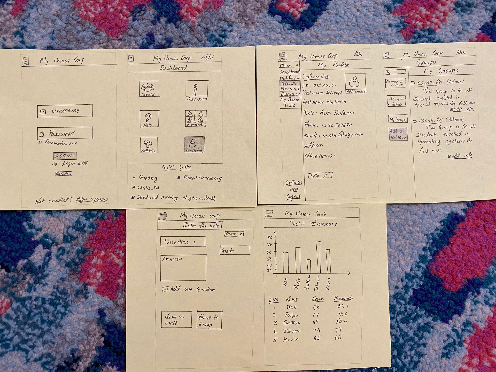
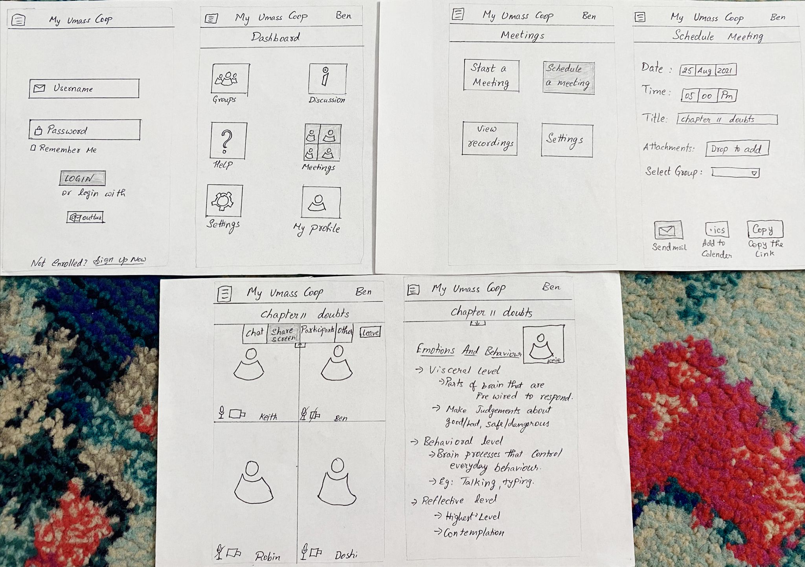
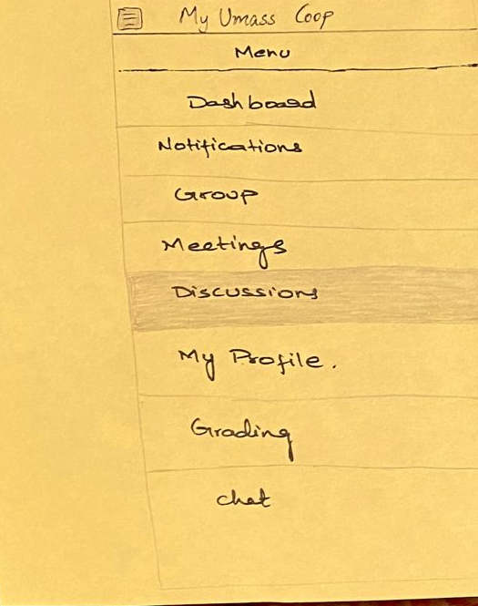

Fig: Initial prototype proposed.
Fig: Initial prototype proposed.
We have used the following briefing to let user know about the website.
Pamplet used to brief to users.
The user selected to be student and create group. At this point we were not sure about the options available in groups. But the options for students and professors was discussed and mentioned.
pros:
cons:
e.g:User felt the tests to be a seperate column and let professor decide on asiignment of groups. Also, he felt navigation to different tabs tough to understand.
Notes:
cons:
- User wanted to make groups distinguishable as student and teacher and topic related.
- User felt there must be either a seperate tests dock and groups and professors must be able to use them.
Notes:
cons:
- User suggested us to make seperate options for login of professor and student.
User mentioned the UI as underdeveloped.
Task-1: Student accessing all the options available to him.
Task-2: Professor accessing and conducting classes on Umass Coop.
Task-3: Professor conducting a meeting to collaborate.
These options are provided to the user to navigate through the website easily.
We have asked users for following options
It is also observed that the users are confused on how we decided on the tests to have group option.
whereas all the users we asked wanted to have test option embedded in the group page.